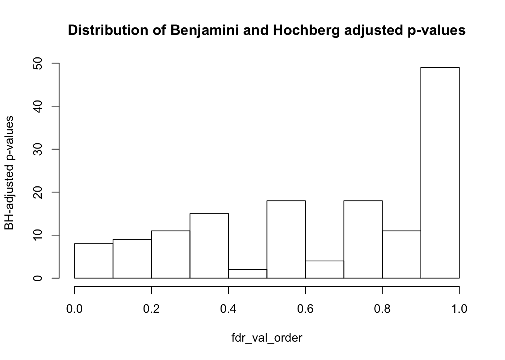
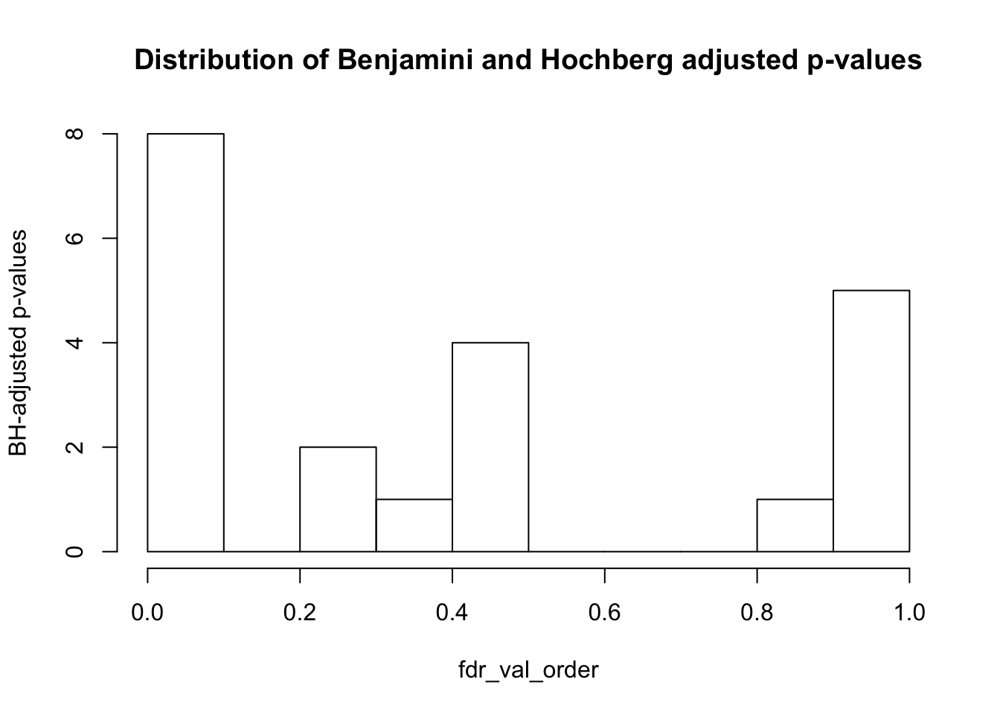
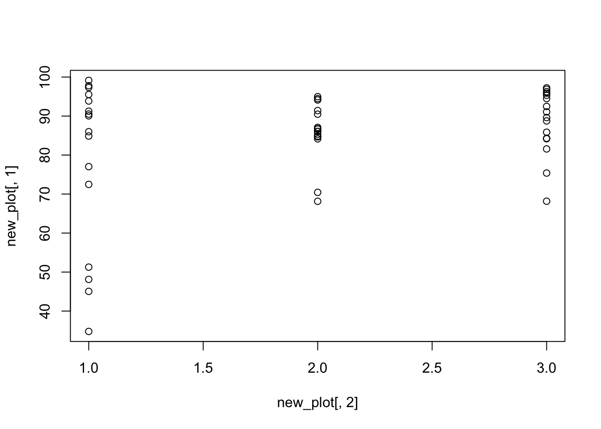

This RMarkdown file does the following:
Analyzing technical variables associated with methylation data.
#Chunk 1
#Load PCs and methylation data
methyl_pcs <- read.csv("../data/methylation_pcs_noX.txt", sep="")
methyl_pcs <- as.data.frame(methyl_pcs)
#This is combined data from all of the samples
BS_seq_info_two <- read.csv("../data/BS_seq_info_two.csv")
BS_seq_sample_info <- read.csv("../data/sample_info.csv")
#Print the dimensions of the technical variables
dim(BS_seq_info_two)## [1] 48 32#Add library
library("ggplot2")#Chunk 23
#Testing association between a particular variable and PCs with a linear model
#Make an empty matrix to put all of the data in
pvaluesandr2 = matrix(data = NA, nrow = 5, ncol = 31*2, dimnames = list(c("PC1", "PC2", "PC3", "PC4", "PC5"), c("Species", "R^2", "Tissue", "R^2", "Number of reads used for methylation extraction", "R^2", "Number of CpG sites with at least 1x coverage", "R^2", "Number of CpG sites with at least 2x coverage", "R^2", "Number of CpG sites with at least 4x coverage", "R^2", "Mean coverage at orthologous CpG sites", "R^2", "Proportion of orthologous CpG sites with low methylation", "R^2", "Proportion of orthologous CpG sites with intermediate methylation", "R^2", "Proportion of orthologous CpG sites with high methylation", "R^2", "Mean methylation at CpG sites", "R^2", "Number of sequenced reads", "R^2", "Number of reads after trimming", "R^2", "Number of mapped reads", "R^2", "Number of reads after deduplication", "R^2", "Number of 5' nt for methylation extraction", "R^2", "Percentage of methylation in non-CpG context", "R^2", "Number of reads mapped to lambda phage genome", "R^2", "Coverage on lambda phage DNA", "R^2", "Conversion efficiency of lambda phage DNA", "R^2", "Read length", "R^2", "DNA concentration", "R^2", "Library Fragment Size", "R^2", "Library concentration", "R^2", "Number of libraries", "R^2", "Flowcell", "R^2", "Library Preparation Date", "R^2", "Multiplexing ID", "R^2", "Machine ID", "R^2", "Sequencing Facility", "R^2", "Encoding", "R^2")))
#Check lm to see how well the species and tissue are correlated with a PC
l = 1
for (i in 2:3){
#For variables starting in the chart with Species
k = 1
for (j in 1:5){
#print(k)
#print(l)
checkPC1 <- lm(methyl_pcs[,j] ~ as.factor(BS_seq_info_two[,i]))
#Get the summary statistics from it
summary(checkPC1)
#Get the p-value of the F-statistic
summary(checkPC1)$fstatistic
fstat <- as.data.frame(summary(checkPC1)$fstatistic)
p_fstat <- 1-pf(fstat[1,], fstat[2,], fstat[3,])
#Fraction of the variance explained by the model
r2_value <- summary(checkPC1)$r.squared
#Put the summary statistics into the matrix w
pvaluesandr2[k,l] <- p_fstat
pvaluesandr2[k,l+1] <- r2_value
k = k+1
}
l = l+2
}
#Check lm to see how well the variables containing numerical data are correlated with a PC
for (i in 4:26){
k = 1
for (j in 1:5){
#print(k)
#print(l)
checkPC1 <- lm(methyl_pcs[,j] ~ BS_seq_info_two[,i])
#Get the summary statistics from it
summary(checkPC1)
#Get the p-value of the F-statistic
summary(checkPC1)$fstatistic
fstat <- as.data.frame(summary(checkPC1)$fstatistic)
p_fstat <- 1-pf(fstat[1,], fstat[2,], fstat[3,])
#Fraction of the variance explained by the model
r2_value <- summary(checkPC1)$r.squared
#Put the summary statistics into the matrix w
pvaluesandr2[k,l] <- p_fstat
pvaluesandr2[k,l+1] <- r2_value
k = k+1
}
l = l+2
}
#Check lm to see how well the variables containing ordinal data are correlated with a PC
for (i in 27:32){
#For variables starting in the chart with Species
k = 1
for (j in 1:5){
#print(k)
#print(l)
checkPC1 <- lm(methyl_pcs[,j] ~ as.factor(BS_seq_info_two[,i]))
#Get the summary statistics from it
summary(checkPC1)
#Get the p-value of the F-statistic
summary(checkPC1)$fstatistic
fstat <- as.data.frame(summary(checkPC1)$fstatistic)
p_fstat <- 1-pf(fstat[1,], fstat[2,], fstat[3,])
#Fraction of the variance explained by the model
r2_value <- summary(checkPC1)$r.squared
#Put the summary statistics into the matrix w
pvaluesandr2[k,l] <- p_fstat
pvaluesandr2[k,l+1] <- r2_value
k = k+1
}
l = l+2
}
pvaluesandr2## Species R^2 Tissue R^2
## PC1 0.000000e+00 0.9596541802 7.105992e-01 0.03050508
## PC2 5.384616e-01 0.0271378170 0.000000e+00 0.92552201
## PC3 1.093297e-03 0.2614356213 1.824896e-11 0.69658756
## PC4 2.398082e-13 0.7251460149 3.257615e-03 0.26599079
## PC5 9.832601e-01 0.0007500112 0.000000e+00 0.95085769
## Number of reads used for methylation extraction R^2
## PC1 0.24234789 0.029592098
## PC2 0.58879715 0.006401561
## PC3 0.41576837 0.014448376
## PC4 0.23220205 0.030880073
## PC5 0.09062576 0.060981927
## Number of CpG sites with at least 1x coverage R^2
## PC1 2.961172e-09 5.384839e-01
## PC2 1.884695e-01 3.729503e-02
## PC3 9.825060e-01 1.056637e-05
## PC4 1.567370e-02 1.204188e-01
## PC5 2.027732e-01 3.502332e-02
## Number of CpG sites with at least 2x coverage R^2
## PC1 0.006469523 0.150345101
## PC2 0.095834062 0.059129551
## PC3 0.558063307 0.007511111
## PC4 0.098024101 0.058382094
## PC5 0.044590981 0.084832090
## Number of CpG sites with at least 4x coverage R^2
## PC1 0.36403579 0.017943852
## PC2 0.06926576 0.069958097
## PC3 0.52676835 0.008765627
## PC4 0.38577512 0.016395113
## PC5 0.03014966 0.098140861
## Mean coverage at orthologous CpG sites R^2
## PC1 0.57117204 0.007023657
## PC2 0.04991866 0.081006324
## PC3 0.61409763 0.005571986
## PC4 0.44653459 0.012653145
## PC5 0.02748346 0.101294843
## Proportion of orthologous CpG sites with low methylation R^2
## PC1 0.0021508865 0.186895441
## PC2 0.0003652673 0.243517944
## PC3 0.7146807055 0.002932793
## PC4 0.7978130391 0.001441232
## PC5 0.0162408197 0.119210038
## Proportion of orthologous CpG sites with intermediate methylation
## PC1 2.420571e-07
## PC2 1.284282e-02
## PC3 9.218255e-02
## PC4 1.938715e-01
## PC5 4.604209e-01
## R^2 Proportion of orthologous CpG sites with high methylation
## PC1 0.44327257 8.790746e-13
## PC2 0.12718592 8.986943e-01
## PC3 0.06041675 7.657407e-02
## PC4 0.03641473 3.334019e-01
## PC5 0.01190293 2.688905e-02
## R^2 Mean methylation at CpG sites R^2
## PC1 0.6743096761 2.597922e-14 0.7201697327
## PC2 0.0003561364 9.125914e-01 0.0002647744
## PC3 0.0665967876 2.121341e-03 0.1873484101
## PC4 0.0203519102 2.861303e-01 0.0246932078
## PC5 0.1020397871 5.659653e-01 0.0072146885
## Number of sequenced reads R^2 Number of reads after trimming
## PC1 0.009998997 0.13566735 0.01010782
## PC2 0.407654100 0.01495477 0.38730286
## PC3 0.173671130 0.03986040 0.19829575
## PC4 0.216308900 0.03303653 0.21383754
## PC5 0.063740486 0.07275260 0.06761553
## R^2 Number of mapped reads R^2
## PC1 0.13530114 0.62239052 0.005315627
## PC2 0.01629083 0.83236496 0.000984157
## PC3 0.03571427 0.04487892 0.084613706
## PC4 0.03338839 0.33464743 0.020248369
## PC5 0.07076791 0.01445224 0.123176676
## Number of reads after deduplication R^2
## PC1 0.24234789 0.029592098
## PC2 0.58879715 0.006401561
## PC3 0.41576837 0.014448376
## PC4 0.23220205 0.030880073
## PC5 0.09062576 0.060981927
## Number of 5' nt for methylation extraction R^2
## PC1 0.6320601 0.005026066
## PC2 0.7600130 0.002048499
## PC3 0.6169891 0.005481751
## PC4 0.2194449 0.032596687
## PC5 0.6259127 0.005208998
## Percentage of methylation in non-CpG context R^2
## PC1 0.43986219 1.302647e-02
## PC2 0.98604618 6.722200e-06
## PC3 0.27318841 2.604098e-02
## PC4 0.97072284 2.960252e-05
## PC5 0.01701047 1.176349e-01
## Number of reads mapped to lambda phage genome R^2
## PC1 0.87684231 0.0005276692
## PC2 0.45115526 0.0123995627
## PC3 0.06935851 0.0699131789
## PC4 0.03844269 0.0898712531
## PC5 0.75567643 0.0021255752
## Coverage on lambda phage DNA R^2
## PC1 0.046446220 0.08344945
## PC2 0.082416329 0.06414130
## PC3 0.088453156 0.06178794
## PC4 0.003361155 0.17219078
## PC5 0.312258104 0.02219005
## Conversion efficiency of lambda phage DNA R^2 Read length
## PC1 0.5482041 0.0078922063 0.7601980
## PC2 0.6831152 0.0036554902 0.2282825
## PC3 0.6847866 0.0036149193 0.9289147
## PC4 0.9377868 0.0001338751 0.8513707
## PC5 0.1033390 0.0566390911 0.6953966
## R^2 DNA concentration R^2 Library Fragment Size
## PC1 0.0020452457 0.5048653 0.0097252275 0.77399751
## PC2 0.0313955071 0.3779842 0.0169360138 0.39154762
## PC3 0.0001748861 0.2496834 0.0287000719 0.83261925
## PC4 0.0007712476 0.9137013 0.0002580673 0.03641812
## PC5 0.0033634611 0.7022867 0.0032057244 0.81489036
## R^2 Library concentration R^2 Number of libraries
## PC1 0.0018104466 0.06319181 7.304363e-02 0.22965484
## PC2 0.0160040745 0.64762566 4.580537e-03 0.09480894
## PC3 0.0009811302 0.86513668 6.337235e-04 0.70283756
## PC4 0.0917110479 0.04014877 8.839538e-02 0.97968197
## PC5 0.0012038832 0.97076360 2.952012e-05 0.30604525
## R^2 Flowcell R^2 Library Preparation Date R^2
## PC1 3.121387e-02 0.7429279 0.5982280 0.4337596 0.3523720
## PC2 5.948563e-02 0.8527387 0.5569944 0.9413863 0.1968376
## PC3 3.193299e-03 0.4913797 0.6662957 0.8232920 0.2493840
## PC4 1.425399e-05 0.6675490 0.6207337 0.2533054 0.4029835
## PC5 2.276073e-02 0.4002271 0.6887227 0.1387550 0.4469582
## Multiplexing ID R^2 Machine ID R^2 Sequencing Facility
## PC1 0.22977961 0.14639607 0.6664859 0.07134384 0.7734944
## PC2 0.24820744 0.14182986 0.7274382 0.06284889 0.5114532
## PC3 0.66839240 0.07107864 0.9182417 0.03290565 0.7299973
## PC4 0.03921478 0.23599643 0.0219365 0.26132792 0.7435460
## PC5 0.12376179 0.18054010 0.9252666 0.03149420 0.4119342
## R^2 Encoding R^2
## PC1 0.001818735 0.7734944 0.001818735
## PC2 0.009429178 0.5114532 0.009429178
## PC3 0.002614305 0.7299973 0.002614305
## PC4 0.002349493 0.7435460 0.002349493
## PC5 0.014685854 0.4119342 0.014685854#Chunk 24
#Get rid of the R^2 values
all_col <- 1:ncol(pvaluesandr2)
matrix_pval <- pvaluesandr2[ , all_col%%2==1 ]
#Find which variables/PC combinations are p-value < 0.05
TorF_matrix <- matrix_pval <=0.05
sum(matrix_pval <= 0.05/((length(BS_seq_info_two)-1)*5))## [1] 9#Find which variables/PC combinations are p-value < 0.05 not including species or tissue (because those explain PC1 and PC2)
matrix_pval_no_tissue_or_species = matrix_pval[ , 3:ncol(matrix_pval)]
sum(matrix_pval_no_tissue_or_species <= 0.05/(ncol(matrix_pval_no_tissue_or_species)*5))## [1] 4#Distribution of p-values adjusted by FDR not including species or tissue
fdr_val = p.adjust(matrix_pval_no_tissue_or_species, method = "fdr", n = length(matrix_pval_no_tissue_or_species))
fdr_val_order = fdr_val[order(fdr_val)]
hist(fdr_val_order, ylab = "BH-adjusted p-values", main = "Distribution of Benjamini and Hochberg adjusted p-values", breaks = 10)
matrix_fdr_val = matrix(data = fdr_val, nrow = 5, ncol = 36, dimnames = list(c("PC1", "PC2", "PC3", "PC4", "PC5"), c("Individual", "Sex", "Age quantile", "Hours post", "Cause of death", "Possible conditions", "Source", "Number of reads used for methulation extraction", "Number of CpG sites with at least 1x coverage", "Number of CpG sites with at least 2x coverage", "Number of CpG sites with at least 4x coverage", "Mean coverage at orthologous CpG sites", "Proportion of orthologous CpG sites with low methylation", "Proportion of orthologous CpG sites with intermediate methylation", "Proportion of orthologous CpG sites with high methylation", "Mean methylation at CpG sites", "Number of sequenced reads", "Number of reads after trimming", "Number of mapped reads", "Number of reads after deduplication", "Number of 5' nt for methylation extraction", "Percentage of methylation in non-CpG context", "Number of reads mapped to lambda phage genome", "Coverage on lambda phage DNA", "Conversion efficiency of lambda phage DNA", "Read length", "DNA concentration", "Library Fragment Size", "Library concentration", "Number of libraries", "Flowcell", "Library Preparation Date", "Multiplexing ID", "Machine ID", "Sequencing Facility", "Encoding"))) ## Warning in matrix(data = fdr_val, nrow = 5, ncol = 36, dimnames =
## list(c("PC1", : data length [145] is not a sub-multiple or multiple of the
## number of columns [36]matrix_fdr_val## Individual Sex Age quantile Hours post Cause of death
## PC1 0.5830045 1.431233e-07 0.1042312 0.7535802 0.8810633
## PC2 0.8893290 5.805051e-01 0.3384165 0.3047571 0.2585073
## PC3 0.7535802 9.860462e-01 0.8795563 0.8486823 0.9074130
## PC4 0.5805051 1.541573e-01 0.3384165 0.7535802 0.7787799
## PC5 0.3384165 5.805051e-01 0.2494334 0.2185850 0.2097422
## Possible conditions Source
## PC1 0.04455408 8.774570e-06
## PC2 0.01059275 1.541573e-01
## PC3 0.91243609 3.384165e-01
## PC4 0.93292654 5.805051e-01
## PC5 0.15415734 7.854238e-01
## Number of reads used for methulation extraction
## PC1 6.373291e-11
## PC2 9.750072e-01
## PC3 3.265659e-01
## PC4 7.032446e-01
## PC5 2.097422e-01
## Number of CpG sites with at least 1x coverage
## PC1 3.766987e-12
## PC2 9.750072e-01
## PC3 4.455408e-02
## PC4 6.382907e-01
## PC5 8.810633e-01
## Number of CpG sites with at least 2x coverage
## PC1 0.1332394
## PC2 0.7535802
## PC3 0.5474416
## PC4 0.5805051
## PC5 0.3047571
## Number of CpG sites with at least 4x coverage
## PC1 0.1332394
## PC2 0.7535802
## PC3 0.5805051
## PC4 0.5805051
## PC5 0.3047571
## Mean coverage at orthologous CpG sites
## PC1 0.9074130
## PC2 0.9432015
## PC3 0.2494334
## PC4 0.7032446
## PC5 0.1541573
## Proportion of orthologous CpG sites with low methylation
## PC1 0.5830045
## PC2 0.8893290
## PC3 0.7535802
## PC4 0.5805051
## PC5 0.3384165
## Proportion of orthologous CpG sites with intermediate methylation
## PC1 0.9074130
## PC2 0.9124361
## PC3 0.9074130
## PC4 0.5805051
## PC5 0.9074130
## Proportion of orthologous CpG sites with high methylation
## PC1 0.7778051
## PC2 0.9860462
## PC3 0.6189425
## PC4 0.9860462
## PC5 0.1541573
## Mean methylation at CpG sites Number of sequenced reads
## PC1 0.9631980 0.24943340
## PC2 0.7787799 0.33841654
## PC3 0.3047571 0.33841654
## PC4 0.2425655 0.06092094
## PC5 0.9124361 0.67578246
## Number of reads after trimming Number of mapped reads
## PC1 0.8735120 0.9124361
## PC2 0.9124361 0.5805051
## PC3 0.9124361 0.9750072
## PC4 0.9750072 0.9511316
## PC5 0.3484689 0.9124361
## Number of reads after deduplication
## PC1 0.8332664
## PC2 0.7535802
## PC3 0.5830045
## PC4 0.9750072
## PC5 0.9124361
## Number of 5' nt for methylation extraction
## PC1 0.9124361
## PC2 0.7535802
## PC3 0.9432015
## PC4 0.2425655
## PC5 0.9432015
## Percentage of methylation in non-CpG context
## PC1 0.3047571
## PC2 0.9124361
## PC3 0.9575940
## PC4 0.2425655
## PC5 0.9860462
## Number of reads mapped to lambda phage genome
## PC1 0.5805051
## PC2 0.3384165
## PC3 0.9124361
## PC4 0.9860462
## PC5 0.6723721
## Coverage on lambda phage DNA Conversion efficiency of lambda phage DNA
## PC1 0.9124361 0.7764832
## PC2 0.9511316 0.9750072
## PC3 0.8284889 0.9432015
## PC4 0.9124361 0.5830045
## PC5 0.7535802 0.4470994
## Read length DNA concentration Library Fragment Size
## PC1 0.5805051 0.9124361 0.9124361
## PC2 0.5830045 0.9124361 0.8332664
## PC3 0.9124361 0.9750072 0.9124361
## PC4 0.2425655 0.1871055 0.9124361
## PC5 0.4078514 0.9750072 0.7535802
## Library concentration Number of libraries Flowcell
## PC1 0.9124361 0.5830045 1.431233e-07
## PC2 0.8332664 0.8893290 5.805051e-01
## PC3 0.9124361 0.7535802 9.860462e-01
## PC4 0.9124361 0.5805051 1.541573e-01
## PC5 0.7535802 0.3384165 5.805051e-01
## Library Preparation Date Multiplexing ID Machine ID
## PC1 0.1042312 0.7535802 0.8810633
## PC2 0.3384165 0.3047571 0.2585073
## PC3 0.8795563 0.8486823 0.9074130
## PC4 0.3384165 0.7535802 0.7787799
## PC5 0.2494334 0.2185850 0.2097422
## Sequencing Facility Encoding
## PC1 0.04455408 8.774570e-06
## PC2 0.01059275 1.541573e-01
## PC3 0.91243609 3.384165e-01
## PC4 0.93292654 5.805051e-01
## PC5 0.15415734 7.854238e-01#write.csv(matrix_fdr_val, "../data/matrix_pval_no_tissue_or_species1.csv")#Chunk 25
# Number of values significant at 10% FDR not including species or tissue
sum(matrix_fdr_val <= 0.1)## [1] 12#Get the coordinates of which variables/PC combinations are significant at FDR 10%
TorF_matrix_fdr <- matrix_fdr_val <=0.1
coor_to_check <- which(matrix_fdr_val <= 0.1, arr.ind=T)
coor_to_check <- as.data.frame(coor_to_check)
# Number of variables significant at 10% FDR not including species or tissue (note: off by 3 from column number in BS_seq_info_two file; see notes in next section)
coor_to_check_col <- coor_to_check$col
unique(coor_to_check_col)## [1] 2 6 7 8 9 17 31 35 36length(unique(coor_to_check_col))## [1] 9Check the following variables to see if they segregate with species and/or tissue
For the variable(s) that correlate, see if these segregate with either species or tissue.
In coor_to_check_col, row is the PC # and col is the column # -3 that is associated with the PC Want to take the coor_to_check_col column # and add three. That is the variable that we should check to see if it correlates with tissue or species.
#Chunk 27
#Testing to see if differences across variable groups are statistically significant for species. If statistically significant, then we should investigate further whether this variable is confounded with species or tissue.
var_numb = c(5,6,9,10,11,12,20)
var.numb = c(5,6,9,10,11,12,20)
#Make a matrix to store the p-values
pvalues_species1 = matrix(data = NA, nrow = 1, ncol = 6, dimnames = list(c("p-value"), c("Individual","Age quantile", "Hours post", "Cause of death", "Possible conditions", "Source")))
j=1
for (i in var.numb[1:6]) {
pvalues_species1[,j] <- chisq.test(as.factor(BS_seq_info_two[,i]), as.factor(BS_seq_info_two$Species), simulate.p.value = TRUE)$p.value
}
pvalues_species2 = matrix(data = NA, nrow = 1, ncol = 7, dimnames = list(c("p-value"), c("Number of CpG sites with at least 1x coverage", "Number of CpG sites with at least 2x coverage", "Proportion of orthologous CpG sites with low methylation", "Proportion of orthologous CpG sites with intermediate methylation", "Proportion of orthologous CpG sites with high methylation", "Mean methylation level at orthologous CpG sites", "Coverage on the lambda phage genome")))
var_numb = c(5,6,9,10,11,12,20)
#Performing this test of significance for variables that are numerical data (Using an ANOVA)
j=1
for (i in var.numb[1:7]) {
summary_anova = summary(aov(BS_seq_info_two[,i]~ as.factor(BS_seq_info_two$Species)))
data_summary_anova <- as.data.frame(summary_anova[[1]]$`Pr(>F)`)
p_val_anova <- data_summary_anova[1,]
pvalues_species2[,j] <- p_val_anova
j=j+1
}
pvalues_species <- cbind(pvalues_species1, pvalues_species2)
#Testing to see if differences across variable groups are statistically significant for tissues. If statistically significant, then we should investigate further whether this variable is confounded with species or tissue.
pvalues_tissues1 = matrix(data = NA, nrow = 1, ncol = 6, dimnames = list(c("p-value"), c("Individual","Age quantile", "Hours post", "Cause of death", "Possible conditions", "Source")))
j=1
for (i in var.numb[1:6]) {
pvalues_tissues1[,j] <- chisq.test(as.factor(BS_seq_info_two[,i]), as.factor(BS_seq_info_two$Tissue), simulate.p.value = TRUE)$p.value
j=j+1
}
#Make a matrix to store the p-values
pvalues_tissues2 = matrix(data = NA, nrow = 1, ncol = 7, dimnames = list(c("p-value"), c("Number of CpG sites with at least 1x coverage", "Number of CpG sites with at least 2x coverage", "Proportion of orthologous CpG sites with low methylation", "Proportion of orthologous CpG sites with intermediate methylation", "Proportion of orthologous CpG sites with high methylation", "Mean methylation level at orthologous CpG sites", "Coverage on the lambda phage genome")))
#Performing this test of significance for variables that are numerical data (Using an ANOVA)
j=1
for (i in var.numb[1:7]) {
summary_anova = summary(aov(BS_seq_info_two[,i]~ as.factor(BS_seq_info_two$Tissue)))
data_summary_anova <- as.data.frame(summary_anova[[1]]$`Pr(>F)`)
p_val_anova <- data_summary_anova[1,]
pvalues_tissues2[,j] <- p_val_anova
j=j+1
}
pvalues_tissues <- cbind(pvalues_tissues1, pvalues_tissues2)
collapse_table <- rbind(pvalues_species, pvalues_tissues)
colnames(collapse_table) <- c("Individual", "Age quantile", "Hours postmortem", "Cause of death", "Possible conditions affecting tissues", "Source", "Number of CpG sites with at least 1x coverage", "Number of CpG sites with at least 2x coverage", "Proportion of orthologous CpG sites with low methylation", "Proportion of orthologous CpG sites with intermediate methylation", "Proportion of orthologous CpG sites with high methylation", "Mean methylation level at orthologous CpG sites", "Coverage on the lambda phage genome")
rownames(collapse_table) <- c("Species", "Tissue")
collapse_table## Individual Age quantile Hours postmortem Cause of death
## Species 0.04847576 NA NA NA
## Tissue 1.00000000 1 0.2723638 0.13993
## Possible conditions affecting tissues Source
## Species NA NA
## Tissue 0.5042479 0.8415792
## Number of CpG sites with at least 1x coverage
## Species 3.452343e-12
## Tissue 6.391236e-01
## Number of CpG sites with at least 2x coverage
## Species 0.003819978
## Tissue 0.129960572
## Proportion of orthologous CpG sites with low methylation
## Species 0.002856827
## Tissue 0.003785922
## Proportion of orthologous CpG sites with intermediate methylation
## Species 9.772687e-06
## Tissue 3.548493e-02
## Proportion of orthologous CpG sites with high methylation
## Species 1.488956e-10
## Tissue 8.046766e-02
## Mean methylation level at orthologous CpG sites
## Species 6.115829e-13
## Tissue 9.695033e-02
## Coverage on the lambda phage genome
## Species 0.1154996111
## Tissue 0.0004701676#Chunk 28
#Calculate q-values (FDR = 10%)
fdr_val = p.adjust(collapse_table, method = "fdr", n = length(collapse_table)*2)
fdr_val_order = fdr_val[order(fdr_val)]
hist(fdr_val_order, ylab = "BH-adjusted p-values", main = "Distribution of Benjamini and Hochberg adjusted p-values", breaks = 10)
collapse_table_fdr_val = matrix(data = fdr_val, nrow = 2, ncol = 13, dimnames = list(c("Species", "Tissue"), c("Individual", "Age quantile", "Hours postmortem", "Cause of death", "Possible conditions affecting tissues", "Source", "Number of CpG sites with at least 1x coverage", "Number of CpG sites with at least 2x coverage", "Proportion of orthologous CpG sites with low methylation", "Proportion of orthologous CpG sites with intermediate methylation", "Proportion of orthologous CpG sites with high methylation", "Mean methylation level at orthologous CpG sites", "Coverage on the lambda phage genome")))
collapse_table_fdr_val## Individual Age quantile Hours postmortem Cause of death
## Species 0.252074 NA NA NA
## Tissue 1.000000 1 0.8851824 0.4850908
## Possible conditions affecting tissues Source
## Species NA NA
## Tissue 1 1
## Number of CpG sites with at least 1x coverage
## Species 8.976091e-11
## Tissue 1.000000e+00
## Number of CpG sites with at least 2x coverage
## Species 0.02482986
## Tissue 0.48271069
## Proportion of orthologous CpG sites with low methylation
## Species 0.02475916
## Tissue 0.02482986
## Proportion of orthologous CpG sites with intermediate methylation
## Species 0.0001270449
## Tissue 0.2050240230
## Proportion of orthologous CpG sites with high methylation
## Species 2.580857e-09
## Tissue 3.803926e-01
## Mean methylation level at orthologous CpG sites
## Species 3.180231e-11
## Tissue 4.201181e-01
## Coverage on the lambda phage genome
## Species 0.461998444
## Tissue 0.004889743write.csv(collapse_table_fdr_val, "../data/matrix_pval_tissue_or_species2.csv")
new_plot <- cbind(BS_seq_info_two$Coverage.on.the.lambda.phage.genome...averaged.over.technical.replicates., BS_seq_info_two$Species)
plot(new_plot[,2], new_plot[,1])
h_new <- new_plot[17:31,]
c_new <- new_plot[32:47,]
t.test(h_new[,1], c_new[,1])##
## Welch Two Sample t-test
##
## data: h_new[, 1] and c_new[, 1]
## t = -1.4583, df = 27.245, p-value = 0.1562
## alternative hypothesis: true difference in means is not equal to 0
## 95 percent confidence interval:
## -8.977207 1.516235
## sample estimates:
## mean of x mean of y
## 85.97806 89.70854